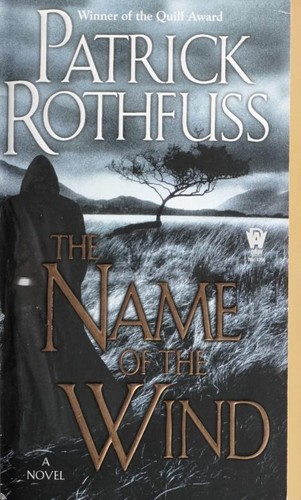
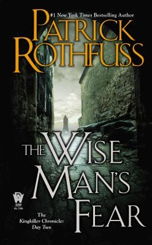
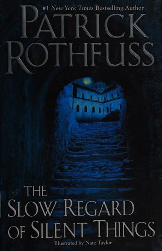
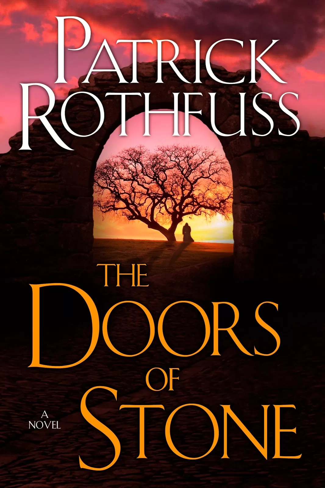

Fifteen Years of Silence: Patrick Rothfuss, The Doors of Stone, and the Architecture of Creative Friction
I maintain a database of 571 highlighted quotes saved on Goodreads from my years of reading, and of those, 44 belong to Patrick Rothfuss: a count that outpaces Marcus Aurelius, Iain M. Banks, and Ursula K. Le Guin.
It is a testament to the density of his prose and his uncanny ability to articulate truths we feel we already possess but lack the language to express. Consider this:
“It’s like everyone tells a story about themselves inside their own head. Always. All the time. That story makes you what you are. We build ourselves out of that story.”
Or this:
“It’s the questions we can’t answer that teach us the most. They teach us how to think. If you give a man an answer, all he gains is a little fact. But give him a question and he’ll look for his own answers.”
The Wise Man’s Fear was published in March 2011, and it has now been fifteen years: the third and final volume of the Kingkiller Chronicle, The Doors of Stone, remains without a release date. It’s hard not to feel sad about the fifteen-year wait. But the way the internet talks about Rothfuss right now doesn’t just do him a disservice. It fundamentally misunderstands how writing actually works.
Quick jargon guide
- Unreliable narrator: a storyteller whose account cannot be fully trusted, whether because of self-deception, deliberate omission, or a limited perspective. Kvothe is telling his own legend, which means every claim he makes is filtered through ego, memory, and motivation.
- Framing device: a narrative structure in which a story is presented as being told within another story. The three-day recounting in the inn is the frame; Kvothe's history is the story inside it. The frame determines what we know before we begin.
- In medias res: Latin for “into the middle of things.” A story that begins in the middle of the action rather than at the chronological beginning. The Kingkiller Chronicle opens with Kvothe already broken and in hiding, then works backwards through his history.
- Dramatic irony: when the audience knows something a character does not, or knows how a story ends before the character has lived it. Every triumph Kvothe narrates is coloured by the reader’s knowledge of where he ends up.
- Narrative constraint: the structural limits a writer imposes on themselves that shape what an ending can and cannot do. Rothfuss wrote the conclusion into the opening, which means Book Three cannot simply wrap things up: it must earn a very specific kind of devastation.
- DAW: Rothfuss’s former publisher, an imprint of Penguin. His public parting from them in 2020 was a significant signal about the state of the manuscript.
- Worldbuilders: a charity founded by Rothfuss that raises money for Heifer International. It is separate from his writing and has raised millions of dollars.
The Story So Far: A Structural Tragedy
If you have not read the Kingkiller Chronicle, allow me to persuade you.
The series opens in medias res, dropping us into a sleepy inn at the edge of nowhere, where the innkeeper is a man called Kote: unremarkable, careful, going through the motions of a small life. A travelling scribe called Chronicler recognises him as Kvothe, a figure of legend, a wizard, a warrior, a thief, a musician, and a man whose name has become myth. Kvothe agrees to dictate his story over three days, and the books are the transcription of that recounting.
The brilliance of this framing device lies in its fatalism: we are granted the ending on the first page, Kvothe is broken, and whatever happened, whatever he did or failed to do, he ended up here, calling himself by a false name and deliberately making himself small. This creates sustained dramatic irony throughout, in that the reader knows the destination while Kvothe narrates his triumphs, and every victory is shadowed by the knowledge of what it inevitably leads to.
The Kingkiller Chronicle at a glance

The Name of the Wind
2007 · Book One
Day One of Kvothe’s story: his childhood among the Edema Ruh travelling performers, the murder of his family by the Chandrian, and years surviving alone on the streets of Tarbean before earning a place at the University. The book establishes the series’ central device: a legendary figure telling his own story, knowing full well how it ends.

The Wise Man’s Fear
2011 · Book Two
Day Two: Kvothe leaves the University to serve the Maer of Vintas, trains with the Adem warrior-philosophers in Ademre, and encounters the fae creature Felurian. The mystery of the Chandrian and the Amyr deepens without resolving, and the gap between Kvothe’s growing legend and the subdued, broken man in the inn grows harder to explain.

The Slow Regard of Silent Things
2014 · Novella (#2.5)
A standalone novella set between the main books, following Auri, a peripheral but beloved character, through seven days alone in the Underthing beneath the University. It advances no plot, but it is hushed, strange, and deeply beautiful, and it rewards readers who have already given themselves over to the world. Rothfuss himself recommends reading it only after Book Two.

The Doors of Stone
Forthcoming · Book Three
Day Three, the conclusion, and the book this entire post is about. Whatever it contains, it must account for the wars Kvothe is said to have started, the king he is said to have killed, and the broken man left behind in a wayside inn calling himself Kote. No release date. No confirmed manuscript. Fifteen years and counting.
Fan cover art via Rising Shadow. No official cover exists.

© Ken Reid. All rights reserved. The Kingkiller Chronicle has the feeling of something built over centuries: layered, deliberate, and load-bearing at every level.
What sets the series apart from standard fantasy is not its world-building or its plot momentum, but the compounding weight of its themes. The unreliable narrator means you can never fully trust the story you are being told. The mythology of the self means the gap between who Kvothe is and who people believe him to be is not just a character detail but the central dramatic engine. And the cost of knowledge, where every skill acquired demands a compounding price, gives the whole arc its particular melancholy.
The Slow Regard of Silent Things, the novella published between the two main books, is worth mentioning here because it shows a different register entirely: quieter, stranger, more interior. It follows Auri, a minor character from the main series, through seven days alone beneath the University, and it advances no plot whatsoever (or, it at least feels that way). That Rothfuss could write something so tonally removed from the main series, and make it work, is its own kind of evidence about the range of craft involved.
The Wait: A Timeline of Attrition
The Wise Man’s Fear arrived in March 2011 to enormous anticipation and ecstatic reviews, and at the time Rothfuss indicated the third book was well underway and the wait would not be long. Here is a rough timeline of the fifteen years since:
- 2012–2014Rothfuss gives occasional reassuring signals: the book is progressing and fans remain patient, understanding that sequels require time.
- 2015Lionsgate acquires the TV and film rights, genuine excitement surrounds an adaptation, and Lin-Manuel Miranda is attached to compose music, though the adaptation landscape around the series becomes painfully complicated for years afterward.
- 2016–2018Blog posts slow down, convention appearances continue but the book is rarely discussed in concrete terms, and a pattern of silence emerges.
- 2018A Twitch stream circulates widely in fan communities: when asked about the book, Rothfuss appears visibly distressed, describing himself as having been “a mess,” and this is the first time many readers recognise the situation is not a straightforward delay but a genuine crisis.
- 2020The silence is broken externally, when in July, Rothfuss’s longtime editor and DAW publisher Betsy Wollheim posts a frustrated public message on Facebook stating she had “never seen a word of book three” in nine years. A publisher publicly airing this level of exasperation regarding their biggest author is practically unheard of, and it confirmed readers’ worst fears about the state of the manuscript.
- 2021–2022The Charity Chapter Debacle: in December 2021, Rothfuss promises to release a fully narrated chapter of The Doors of Stone if a Worldbuilders charity stretch goal is met, fans donated over a million dollars. Rothfuss promised the chapter by ‘February 2022 at the latest.’ The date passed, the chapter never arrived, and communication effectively dried up. Uh oh.
- 2023–2026Still no book, no chapter, no release date, with Rothfuss remaining publicly active in tabletop gaming, though the 2021 unfulfilled charity promise has permanently altered the dynamic between the author and his fandom.
The Weight of Waiting

© Ken Reid. All rights reserved. Navigating a creative impasse while the internet watches is not a straight line.
Some feel misled, which is a fair grievance: in the early years Rothfuss made reassuring statements about the book’s progress that proved inaccurate, and the anger surrounding the 2021 charity fundraiser is entirely valid. When an author promises a specific piece of writing in exchange for charitable donations and then fails to deliver that reward for half a decade without explanation, a massive breach of trust occurs, and it is no longer just about a delayed book but about accountability.
© Ken Reid. All rights reserved. The average Reddit user composing their message to Rothfuss.
It’s fair to be frustrated, but a lot of the online backlash crosses the line into outright cruelty. The harassment, the consumer entitlement, and the attacks on his mental health aren’t just unfair. They completely ignore the human being on the other side of the screen. The argument that he should abandon all other creative pursuits until the book is finished misjudges the human brain, because creative capacity is not a factory assembly line and you cannot force a broken machine to produce by locking it in a room.
People constantly compare him to George R. R. Martin. While the comparison makes sense on the surface, given they are both writing massively delayed fantasy epics, it misses a crucial structural difference: A Song of Ice and Fire is structurally open-ended, whereas the Kingkiller Chronicle is not, as Rothfuss wrote the ending of his trilogy into the beginning of his first book, and the three-day framing device dictates that Book Three must land with the exact narrative weight the first two books have been promising. That is a vastly tighter constraint than finishing a sprawling multi-POV epic, and it is not just writing a book but solving a decade-old narrative equation.
In Defence of the Craft
Writing at this level is agonizingly difficult. The dense prose, the tight mythology, the million words of foreshadowing, and the layers of unreliable narration do not happen by accident. This is not an author failing to produce a serviceable genre novel but an author attempting to satisfy an uncommonly high standard of craft that he himself established.
“You have to be a bit of a liar to tell a story the right way.”
The ending problem is that constraint made concrete: the third book must vividly depict a catastrophe severe enough to justify the shattered man in the inn, while remaining earned enough to validate the brilliance of the preceding volumes. That is one of the hardest problems in storytelling, and the pressure it generates is paralysing.
Depression and creative burnout are documented, formidable obstacles, whatever the internet implies, and the 2018 Twitch stream where Rothfuss described being “a mess” was genuine. High-level cognitive creative work and serious mental health struggles are rarely compatible.
“No man is brave that has never walked a hundred miles. If you want to know the truth of who you are, walk until not a person knows your name. Travel is the great leveler, the great teacher, bitter as medicine, crueler than mirror-glass. A long stretch of road will teach you more about yourself than a hundred years of quiet.”
Add to this the external noise: a strained publisher relationship, an adaptation in limbo, and millions of expectant readers whose anticipation creates a crushing psychological weight. I do not think many of those demanding the book have seriously considered what it feels like to sit at a keyboard knowing millions of readers are watching, waiting, and actively judging your mental health and your creative choices.
What We Already Have
“Anyone can love a thing because. That’s as easy as putting a penny in your pocket. But to love something despite. To know the flaws and love them too. That is rare and pure and perfect.”
We already have two extraordinary books. The Name of the Wind and The Wise Man’s Fear are masterpieces in themselves, they reward rereading, they contain some of the finest prose in contemporary fantasy, and that the trilogy remains unfinished does not retroactively diminish their brilliance.
There is a real possibility that The Doors of Stone may never arrive, or that it arrives in a form diminished by the grueling wait. I have made a kind of peace with that possibility, not out of indifference, but because the alternative is allowing the absence of a third book to sour the experience of the two that exist, and I refuse to do that.

© Ken Reid. All rights reserved. Some stories take time. The best ones usually do.
A Note to Rothfuss, if He Ever Reads This
I hope you are okay, and I hope the book comes, because I desperately want to know how the story ends and because I believe you want to finish it too. I hope the noise from the outside world has not made the inside world too hostile to create in.
And I want to say, on behalf of the readers who feel this way: the two books you gave us were enough to make you one of the most-highlighted authors in my reading life, and whatever comes next, what you have already given us is real, and it matters.
“There are three things all wise men fear: the sea in storm, a night with no moon, and the anger of a gentle man.”
Common questions
Is there any confirmed progress on The Doors of Stone?
As of 2026, there is no confirmed release date and no official update on the manuscript’s status. Rothfuss has not made any public announcements about the book’s completion or timeline.
What happened with the TV adaptation?
Lionsgate acquired the rights in 2015, with Lin-Manuel Miranda attached to write music. The project has been in development limbo for years. As of writing, no series has been produced and the adaptation status is unclear.
Should I start reading the series given it’s unfinished?
Yes. The two existing books are worth reading regardless of whether the third ever arrives. They are complete and rewarding on their own terms. Just know going in that the trilogy does not have an ending yet.
What is Worldbuilders?
Worldbuilders is a charity founded by Rothfuss that raises money for Heifer International, which works to end hunger and poverty. It has raised millions of dollars. It is a genuine and ongoing charitable effort, and using it as a criticism of Rothfuss the author reflects a misunderstanding of how creative work and personal capacity actually function.